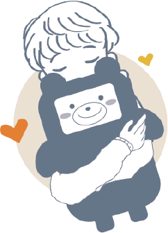
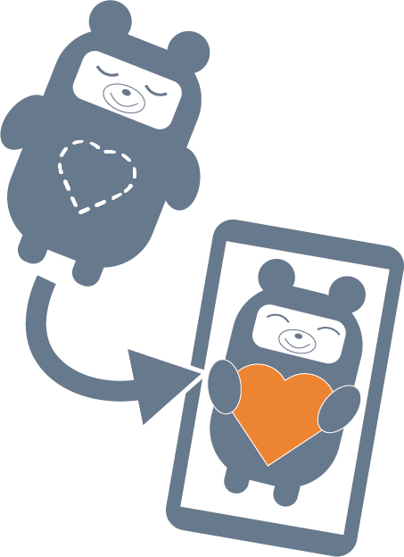
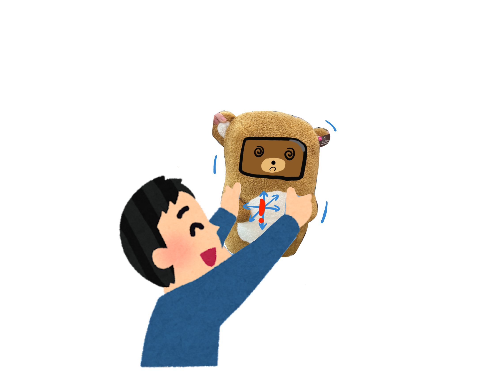
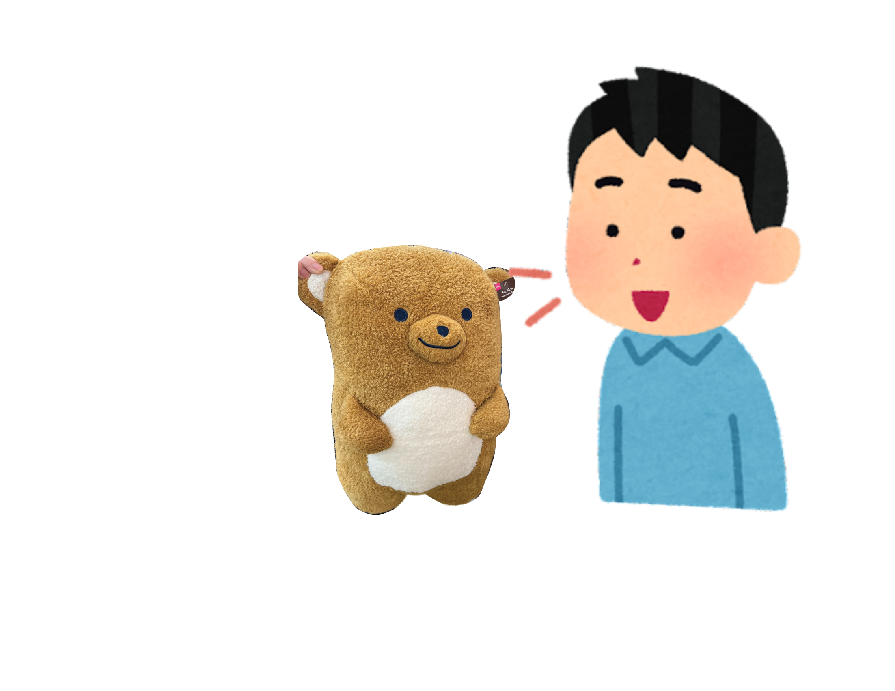
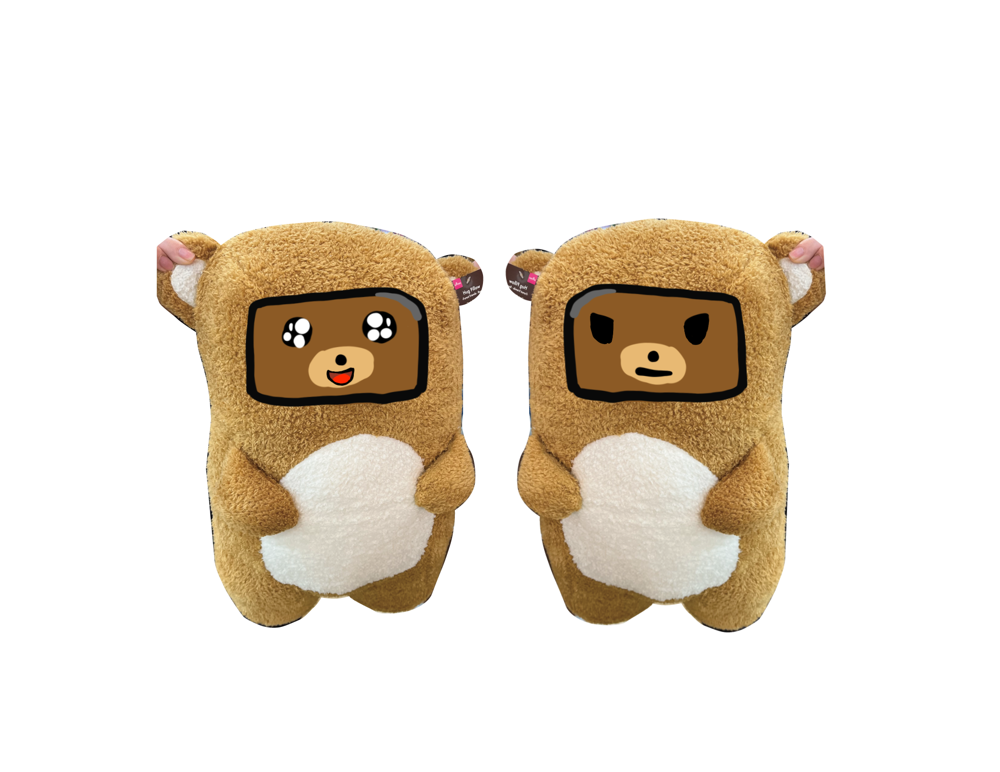

センサーは頭頂部、耳、背中に１つずつついていて
あなたが撫でると嬉しそうな顔をしたり耳をつねられると
嫌そうな顔をしたりします。
また加速度センサーが内蔵されていてあなたからの抱っこに反応します。


音声認識・音声合成の技術を用いて
あなたの声を正確に聞き取って状況に応じた返事をします。
事前にプログラムされたものを再生しているだけではなく、
システムにAIによるディープラーニングを組み込んでいる音声合成エンジンを通して、
様々な特徴を持っているボイスを生成します。
喜怒哀楽を演出できる目で非言語コミュニケーションを可能にします。
音声言語を用いた情報伝達だけではなく､
表情や視線など情報を合わせて用いることにより､
より円滑なコミュニケーションを行います。


アプリではMVMがやって来た日に、名前をつけたり
お互いに性格、趣味などを共有したりすることができます。
またMVMの魂をスマホの中に移すことにより
いつでも、どこでもMVMと行動して、MVMと一緒に過ごした日々をダイアログで見ることができます。
そういった機能があるアプリの開発を目指しfigmaでのプロトタイプを製作しました。